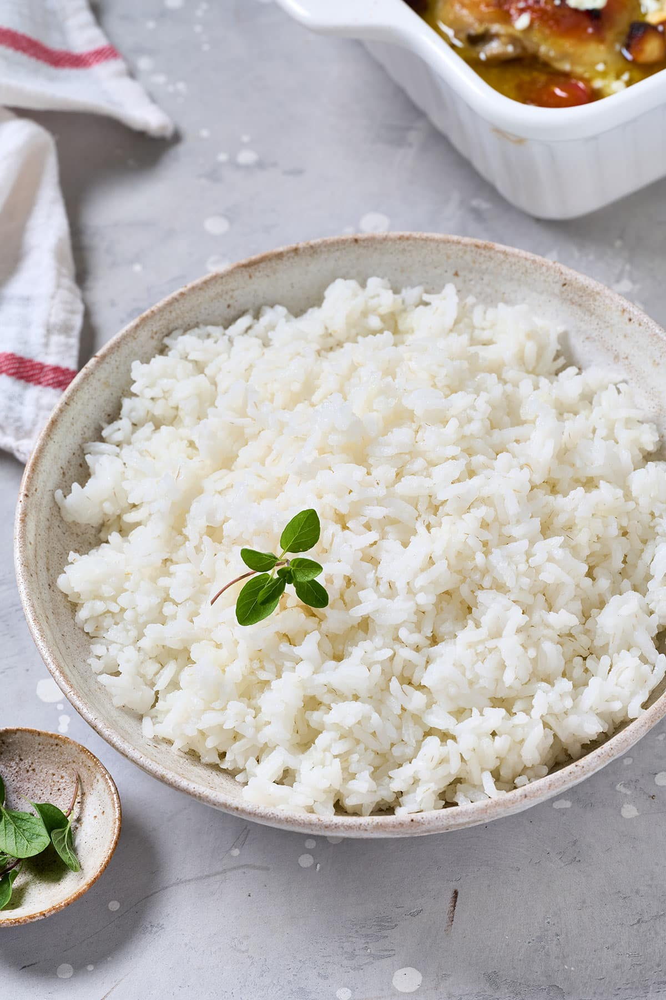

Agriculture is the practice of cultivating the soil, producing crops, and raising livestock. It's a primary
activity that provides food and raw materials for various industries. Essentially, it's the science and art of
farming, encompassing all activities related to growing plants and raising animals.
Farmer:
Indian farmers are people who grow crops as a profession. Various government estimates (Census,
Agricultural Census, National Sample Survey assessments, and Periodic Labour Force Surveys) give a
different number of farmers in the country ranging from 37 million to 118 million as per the different
definitions. Some definitions take in to account the number of holdings as compared to the number of
farmers. Other definitions take into account possession of land, while others try to delink land
ownership from the definition of a farmer. Other terms also used include 'cultivator'.
India's Agricultural Sector
India's agriculture sector is a cornerstone of its economy, providing livelihoods for a large portion of the
population and contributing significantly to the GDP. It is a global powerhouse in various agricultural
products, including milk, pulses, and spices. The sector has seen substantial growth post-independence,
transforming from a food-scarce nation to a food exporter.
Stats -
As per the 2014 FAO world agriculture statistics India is the world's largest producer of many fresh fruits like
banana, mango, guava, papaya, lemon and vegetables like chickpea, okra and milk, major spices like chili pepper,
ginger, fibrous crops such as jute, staples such as millets and castor oil seed. India is the second largest
producer of wheat and rice, the world's major food staples.India is currently the world's second largest
producer of several dry fruits, agriculture-based textile raw materials, roots and tuber crops, pulses, farmed
fish, eggs, coconut, sugarcane and numerous vegetables. India is ranked under the world's five largest producers
of over 80% of agricultural produce items, including many cash crops such as coffee and cotton, in 2010.
India is one of the world's five largest producers of livestock and poultry meat, with one of the fastest growth
rates, as of 2011.In fiscal year ending June 2011, with a normal monsoon season, Indian agriculture accomplished
an all-time record production of 85.9 million tonnes of wheat, a 6.4% increase from a year earlier. Rice output
in India hit a new record at 95.3 million tonnes, a 7% increase from the year earlier. Lentils and many
other food staples production also increased year over year. Indian farmers, thus produced about 71 kilograms of
wheat and 80 kilograms of rice for every member of Indian population in 2011. The per capita supply of rice
every year in India is now higher than the per capita consumption of rice every year in Japan.India exported $39
billion worth of agricultural products in 2013, making it the seventh largest agricultural exporter worldwide,
and the sixth largest net exporter. This represents explosive growth, as in 2004 net exports were about $5
billion. India is the fastest growing exporter of agricultural products over a 10-year period, its $39
billion of net export is more than double the combined exports of the European Union (EU-28). It has become
one of the world's largest supplier of rice, cotton, sugar and wheat. India exported around 2 million metric
tonnes of wheat and 2.1 million metric tonnes of rice in 2011 to Africa, Nepal, Bangladesh and other regions
around the world.
Top 5 Major Agricultural products exported By India:
üçöRice
India is a major exporter of both Basmati and non-Basmati rice, with a strong global demand for this
staple grain.

üßÇSpices
India is a leading producer and exporter of various spices, including chilies, cumin, turmeric, and
cardamom, which are used in cuisines and medicinal applications worldwide.